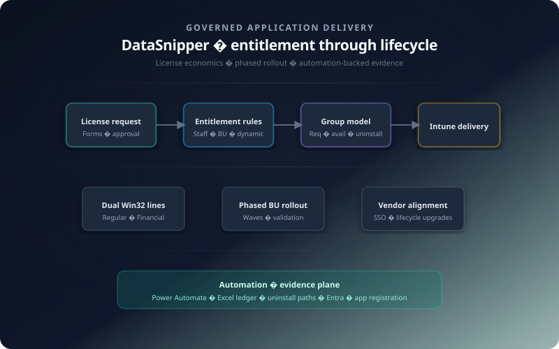

Licensed software estate · Intune & Entra delivery
Application entitlement & licensed rollout
Audit and finance needed the vendor Excel add-in to behave as governed software: who may run which edition, how access expires, and how removals stay honest—instead of shadow installs and spreadsheet reconciliation after the fact.
That meant encoding entitlement and negative intent alongside identity, running phased waves without diluting edition separation, and carrying approvals and state changes into durable operational evidence finance and security could rely on.
Delivery context
This was operational delivery and governance across a licensed productivity line—not a single app publication. Success meant encoding who may receive software, how editions stay distinct, how removals are honoured, and how evidence travels with the lifecycle—so audit and finance could adopt without turning operations into an informal licensing desk.
Why the programme existed
Regulated teams already relied on Excel; DataSnipper extended that surface with vendor-backed capability. At enterprise scale, every install is a licensing position, every edition mismatch is audit noise, and every silent drift after a role change erodes trust in the endpoint story.
The objective was disciplined adoption: coverage where workflows justified cost, no shadow installs, and repeatable waves as business units onboarded at different speeds. That pushed entitlement, approval, and uninstall semantics into the same control plane as identity—so delivery could be explained to security, finance, and operations without one-off spreadsheets.
Operating principle: define eligibility and enforcement once in Entra and Intune, then let automation carry state changes—reducing manual reconciliation as populations moved.
Eligibility, entitlement, and negative intent
License-backed access sat on top of identity: staff and business-group signals rolled into Entra groups that Intune could target wave after wave—plus explicit structures for exceptions and for people who must leave the deployed population.
Request & approval
A license request path fed an automated approval flow so access tied to an auditable decision—not anonymous catalogue clicks—and downstream group membership stayed aligned with that decision.
Dynamic & ad hoc groups
Dynamic groups carried durable BU and role logic. Ad hoc cohorts handled time-bound cases—projects, vendor-assisted work, migrations—without rewriting the global eligibility model.
Uninstall cohorts
Dedicated uninstall groups expressed negative intent: when eligibility dropped, targeting shifted to removal semantics instead of ticket-driven cleanup—shrinking long-tail installs that contradict policy.
Phased waves, assignment semantics, and dual editions
Rollout followed business-unit sequencing—not a single blast—so each wave validated detection, support readiness, and consumption before the next cohort inherited the same mechanical pattern.
Intune assignment model
- Required where policy mandated coverage for approved populations.
- Available so eligible users could self-serve without widening mandatory blast radius.
- Uninstall assignments aligned to uninstall cohorts for opt-out and entitlement expiry.
Parallel Win32 packages
Regular and Financial shipped as separate Win32 lines—distinct detection, requirements, and catalogue entries—blocking silent substitution between editions on the estate.
{kind=link}

Power Platform, operational ledger, and identity alignment
Admin consoles describe intent and attempts; stakeholders still need a durable operational picture—who requested access, who holds it, how removals flowed—and identity behaviours must match how Excel loads the add-in in production.
- Excel-backed ledger: Power Automate maintained workbook state so approvals and membership-driven changes were not dependent on ad hoc exports or stale attachments.
- Entra ID & SSO: App registration and sign-in assumptions were validated with the vendor so production Excel behaviour matched install and entitlement posture.
- Installer modernisation: Legacy pinned installers gave way to vendor-supported auto-updating packages—reducing variance and tightening the security baseline over time.
Together that narrowed the gap between “approved in process” and “correctly deployed and removable in tenant,” where enterprise programmes usually accumulate exceptions.
Packaging discipline and vendor-coordinated releases
Each edition line carried its own detection and uninstall story inside Intune’s evaluation loop; documentation captured deltas and escalation paths so engineering, programme management, and the vendor shared one vocabulary when versions moved.
- Explicit ownership for replacing backdated builds—avoiding side-by-side collisions that confuse users and frustrate audit narrative.
- Direct coordination on licensing mechanics, installer behaviour, and production troubleshooting—fewer opaque handoffs when incidents or upgrades landed.
Programme cadence and tenant execution
Wave planning, stakeholder communications, and schedule accountability sat with project management; tenant-side execution focused on repeatable packaging, assignments, and validation against that cadence—so technical shortcuts did not absorb programme risk.
That separation kept packaging and identity mechanics honest while still aligning with business onboarding—and gave vendor conversations a single operational thread.
Outcomes for operations and governance
The programme traded one-off heroics for structures that survive turnover: eligibility that matches licensing intent, assignments that respect uninstall reality, and automation that carries evidence alongside the estate.
Operational results
- Clearer separation between eligible, approved, and actually deployed populations.
- A structured uninstall path—less policy contradicting long-tail installs after role or licence changes.
- Parallel Regular / Financial targeting—lower wrong-edition risk across audit vs broader finance use.
- Automation-fed entitlement intelligence—lighter friction for audit, renewal, and operational reviews.
Framed end-to-end, the initiative reads as enterprise operational delivery: modern workplace tooling governed like production infrastructure—not an isolated app push.